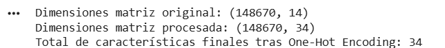
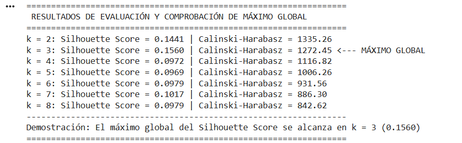
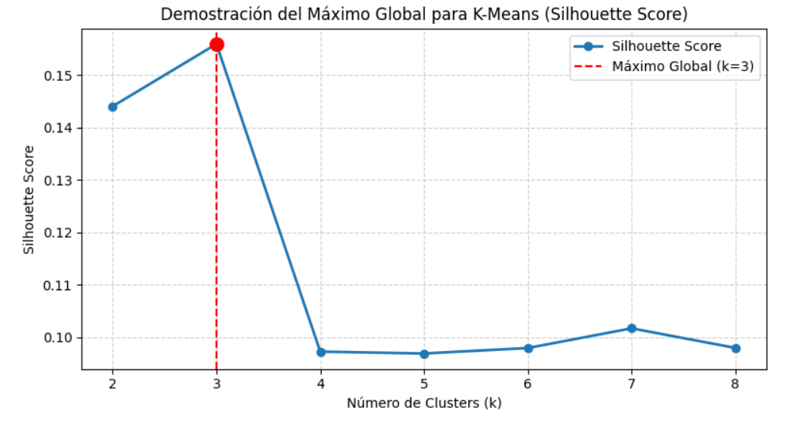
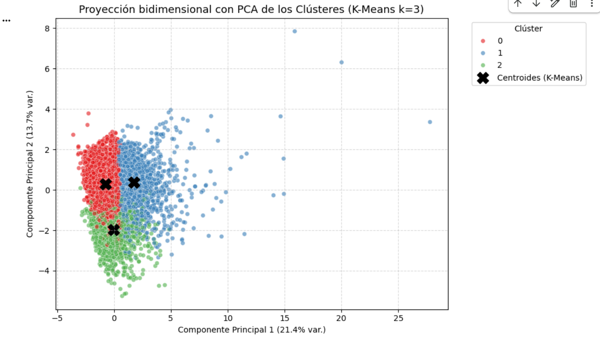
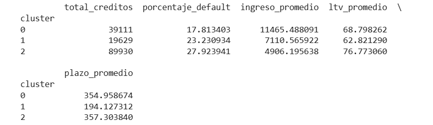

a) Utilizando el conjunto de datos de la actividad de la Sección 1, construya un subconjunto de variables significativas (numéricas y categóricas). Aplique el mismo método de preprocesamiento con ColumnTransformer, incluyendo la imputación de valores faltantes, la codificación One-Hot y el escalado cuando esté técnicamente justificado.
7 Variables Numéricas Seleccionadas
loan_amount, property_value, income, Credit_Score, LTV, dtir1, term
Se selecciona un subconjunto representativo de 14 variables clave (7 numéricas y 7 categóricas) asociadas a la capacidad de pago, riesgo crediticio y perfil del cliente:
Justificación: Imputación por la mediana mediante SimpleImputer(strategy='median') para prevenir sesgos producidos por
valores atípicos en variables sesgadas como ingresos o montos de propiedades.
Escalado continuo mediante StandardScaler indispensable para evitar que variables con escalas grandes dominen las distancias euclídeas en algoritmos
como K-Means y PCA.
7 Variables Categóricas Seleccionadas
loan_type, loan_purpose, business_or_commercial, occupancy_type, credit_type, age, Region
Justificación: Imputación categórica por la moda mediante SimpleImputer(strategy='most_frequent') para preservar
coherencia nominal. Codificación binaria mediante OneHotEncoder(handle_unknown='ignore', sparse_output=False) que expande las 7 categóricas
en 27 columnas binarias dummies (totalizando 34 columnas finales).
Implementación Oficial con Pipeline y ColumnTransformer (scikit-learn):
import pandas as pd
from sklearn.compose import ColumnTransformer
from sklearn.pipeline import Pipeline
from sklearn.impute import SimpleImputer
from sklearn.preprocessing import StandardScaler, OneHotEncoder
# 1. Definición de subconjuntos de características significativas
num_features = ['loan_amount', 'property_value', 'income', 'Credit_Score', 'LTV', 'dtir1', 'term']
cat_features = ['loan_type', 'loan_purpose', 'business_or_commercial', 'occupancy_type', 'credit_type', 'age', 'Region']
# 2. Construcción de Pipelines específicos
numeric_pipeline = Pipeline([
('imputer', SimpleImputer(strategy='median')),
('scaler', StandardScaler())
])
categorical_pipeline = Pipeline([
('imputer', SimpleImputer(strategy='most_frequent')),
('encoder', OneHotEncoder(handle_unknown='ignore', sparse_output=False))
])
# 3. Integración matricial mediante ColumnTransformer
preprocessor = ColumnTransformer(
transformers=[
('num', numeric_pipeline, num_features),
('cat', categorical_pipeline, cat_features)
],
remainder='drop'
)
# 4. Ajuste e imputación/escalado de la matriz
X_processed = preprocessor.fit_transform(df[num_features + cat_features])
print(f"Dimensión resultante: {X_processed.shape}") # (148670, 34)

Entrada original: 148,670 registros y 14 variables seleccionadas.
Salida procesada: Matriz numérica de dimensiones (148670,34) , libre de valores nulos, estandarizada en su bloque numérico y expandida a 34 columnas
procesadas mediante codificación One-Hot, lista para alimentar algoritmos de Clustering (K-Means/DBSCAN), Reducción de Dimensionalidad (PCA) o Clasificación
supervisada.
b) Ejecute K-Means y un segundo método (agrupamiento jerárquico o DBSCAN), y calcule al menos una métrica de calidad de agrupamiento (por ejemplo, puntuación Silhouette) para seleccionar una configuración razonable.
Selección del Número de Clusters ( k=3 en K-Means):
Al evaluar el Silhouette Score en K-Means, el valor alcanza su máximo global en k=3 (0.1560). Agregar más grupos ( k=4,5,6 ) degrada notablemente la separación de los clusters, reduciendo el Silhouette a menos de 0.10 .
| Algoritmo | Configuración | Silhouette Score | Calinski-Harabasz |
|---|---|---|---|
| K-Means | k = 3 | 0.1560 (Óptimo) | 1272.45 |
| K-Means | k = 2 | 0.1441 | 1335.26 |
| K-Means | k = 4 | 0.0972 | 1116.82 |
| K-Means | k = 5 | 0.0969 | 1006.26 |
| Jerárquico (Ward) | k = 2 | 0.1720 | 1040.34 |
| DBSCAN | eps=2.0, min=20 | 0.1084 | N/A (1664 ruido) |
Comparación entre Métodos:
Aunque el Agrupamiento Jerárquico para k=2 alcanza un Silhouette de 0.1720, la partición en únicamente 2 grupos resulta demasiado general para la segmentación de perfiles crediticios complejos.


Debido a que el modelo K-Means presentó la puntuación Silhouette más alta, se seleccionó como la configuración final para la segmentación de los clientes del conjunto Loan Default.
c) Realice una visualización utilizando PCA (o t-SNE, si ya está familiarizado con el concepto) exclusivamente con fines interpretativos. Debe explicar cómo la reducción de dimensionalidad contribuye a la interpretación de los clústeres.
Resultado del script:

d) Reincorpore la variable Estado exclusivamente con fines descriptivos (no para entrenamiento) e informe la tasa de incumplimiento por clúster. Escriba perfiles de 3 a 5 líneas para cada segmento, resaltando las conclusiones prácticas.

La variable Status fue reincorporada con fines descriptivos después de finalizar el proceso de agrupamiento. Posteriormente se calculó la tasa de incumplimiento para cada clúster mediante la proporción de observaciones con estado de incumplimiento dentro de cada segmento.
• Ingreso promedio: $11,465
• Monto crédito prom: $549,905
• LTV promedio: 68.8% | Plazo: 355m
Perfil Descriptivo (3-5 líneas): Solicitantes de alta solvencia patrimonial e ingresos elevados con baja relación préstamo-valor. Registran la menor tasa de mora del dataset (17.81%).
Recomendación: Cartera prioritaria para fidelización, líneas sobregiro preferenciales y tasas de interés competitivas.
• Ingreso promedio: $7,111
• Monto crédito prom: $237,865
• LTV promedio: 62.8% | Plazo: 194m
Perfil Descriptivo (3-5 líneas): Créditos con plazos de amortización sustancialmente reducidos (~194 meses) e ingresos moderados. Presentan mora intermedia (23.23%) por la elevada cuota mensual.
Recomendación: Ofrecer esquemas de flexibilidad o ampliación de plazos a 300-360 meses ante eventos de iliquidez puntual.
• Ingreso promedio: $4,906
• Monto crédito prom: $256,320
• LTV promedio: 76.8% | Plazo: 357m
Perfil Descriptivo (3-5 líneas): Concentra el 60.5% de la muestra, con los menores ingresos, altos índices dtir1 (39.4%) y el mayor apalancamiento sobre la propiedad. Registra la mayor morosidad (27.92%).
Recomendación: Exigir mayores cuotas iniciales (reducir LTV < 70%) y requerir avales o codeudores en la originación.
- K-Means: Algoritmo particional basado en $k$ centroides. Busca minimizar la varianza intra-cluster (suma de distancias euclídeas cuadráticas).
- Jerárquico Aglomerativo: Construye estructuras dendrográficas fusionando grupos secuencialmente mediante métricas de enlace (Ward, Complete, Average).
- DBSCAN: Identifica grupos densos continuos y filtra observaciones atípicas como ruido (`eps`, `min_samples`).
- Silhouette Score [-1, 1]: Mide la cohesión de un dato con su clúster frente a la separación del clúster más cercano.
- Calinski-Harabasz [0, ∞): Razón entre la dispersión inter-cluster y la dispersión intra-cluster (Variance Ratio Criterion).
- DBCV [-1, 1]: Evaluación basada en densidad para estructuras con formas complejas e irregularidades.
- PCA (Componentes Principales): Proyecta datos multidimensionales en ejes ortogonales reteniendo la máxima varianza latente.
- t-SNE & Isomap: Métodos no lineales para visualización de manifolds manteniendo estructuras locales o distancias geodésicas.
- Aprendizaje por Refuerzo (RL): Toma de decisiones secuenciales mediante MDPs ($\langle S,A,P,R,\gamma \rangle$) y algoritmos profundos como Deep Q-Networks (DQN).